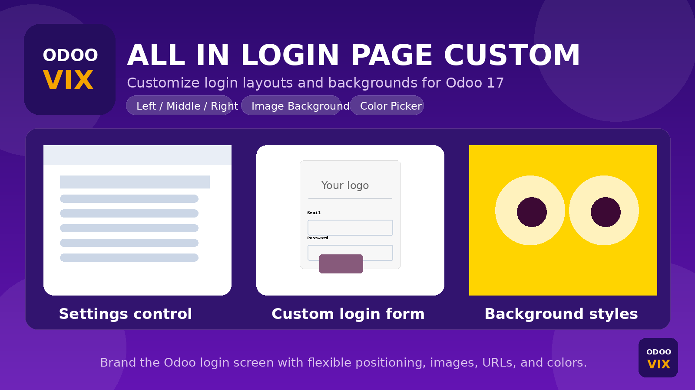
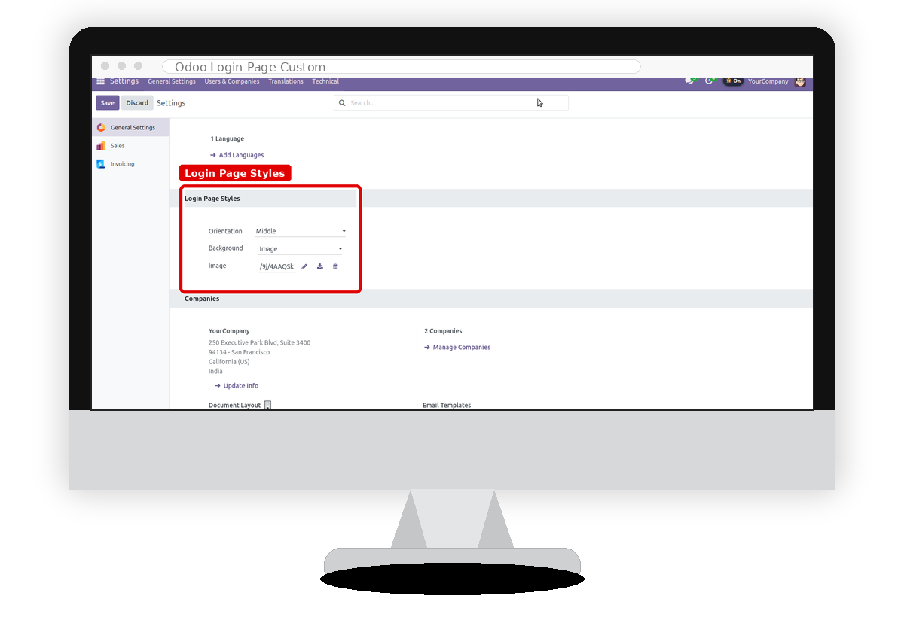
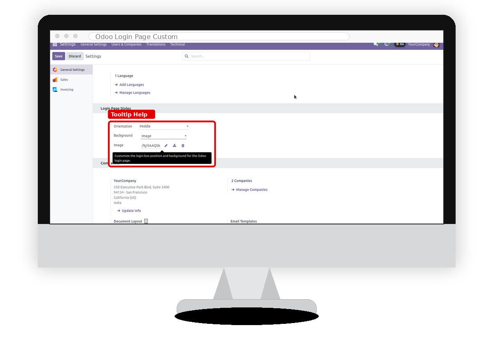
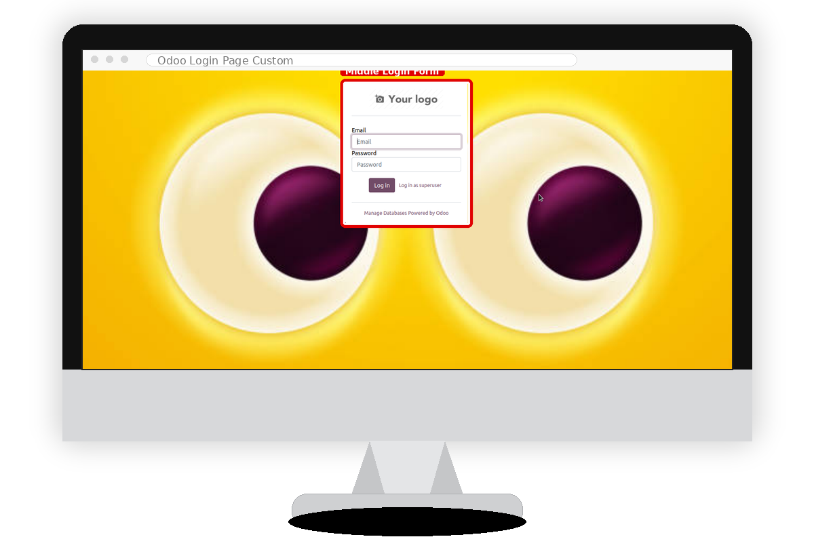
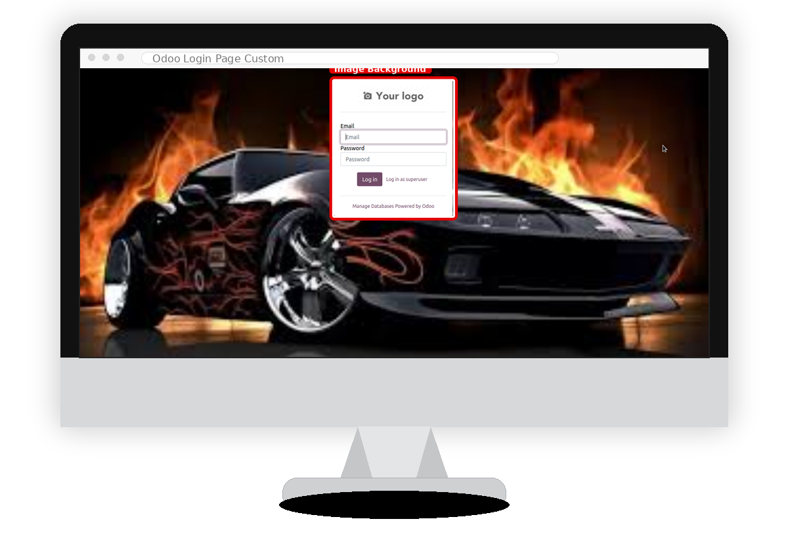
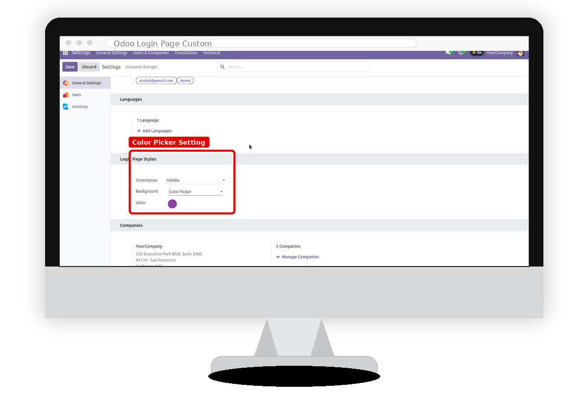

Personalize the Odoo 17 login screen with left, middle, right, or default login layouts and apply image, URL, or color backgrounds from General Settings.

Give every database a branded first impression without editing Odoo source files or maintaining custom website pages.
Place the login box on the left, center, or right side, or return to the standard Odoo login page.
Use a solid color, upload an image, or link an external image URL as the login page background.
Administrators can manage layout and background options directly from Odoo General Settings.
The login panel keeps Odoo's database, password, message, and footer behavior while changing the presentation.
Switch between login box positions and background types without custom code per database.
Review the settings screen and supported login presentation styles with highlighted controls.





Configure the login page after installing the module from Apps.
Install the app and restart or update the Odoo apps list if required.
Open Settings and pick Default, Left, Middle, or Right orientation.
Select a color, image upload, or URL background and save the settings.
No. It keeps Odoo's login behavior and changes the rendered layout based on saved settings.
Yes. Select Default orientation in General Settings and save.
This Odoo 17 build is branded and maintained by Odoovix.
support@odoovix.com